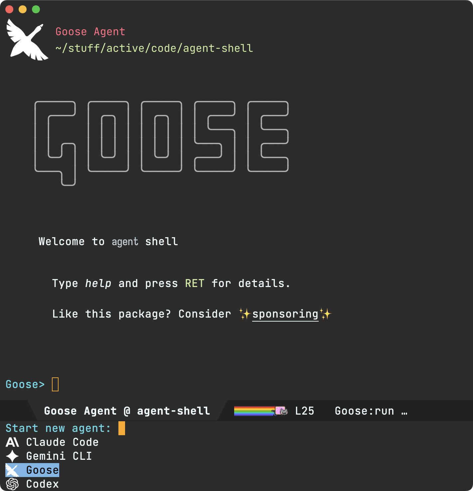
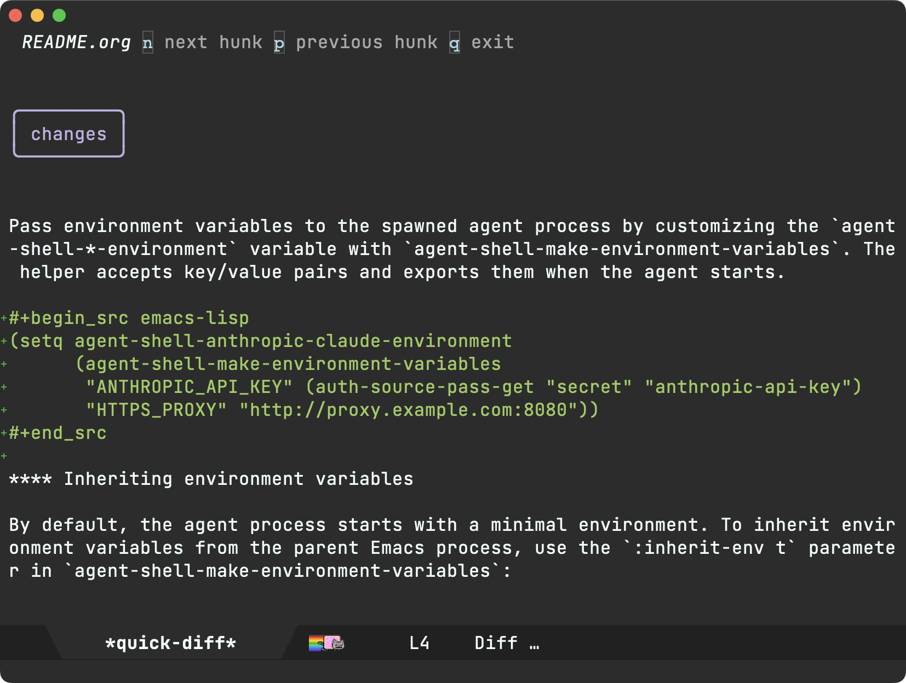

Álvaro Ramírez
agent-shell 0.5 improvements
While it's only been a few weeks since introducing agent-shell, we've landed nearly 100 commits and enough improvements to warrant a new blog post.
More agents
agent-shell now includes support for two additional ACP-capable agents:
- Claude Code
- Codex via codex-acp (new)
- Gemini CLI
- Goose (new)
Unified entry point
In addition to starting new shells via agent-specific commands, we now have a unified M-x agent-shell entry point, enabling selection from a list of supported agents.

The agent-specific commands remain available as usual:
M-x agent-shell-anthropic-start-claude-codeM-x agent-shell-openai-start-codexM-x agent-shell-google-start-geminiM-x agent-shell-goose-start-agent
Toggling display
agent-shell now provides basic control to toggle display of shell buffers:
M-x agent-shell-toggle: Toggles display of the most recently accessed agent (per project).agent-shell-display-action: Controls how agent shells are displayed when activated.
agent-shell-sidebar (new package)
While agent-shell provides basic display toggling, Calum MacRae offers a comprehensive sidebar package. Check out agent-shell-sidebar.
Experimental dev container support (thanks to Fritz Grabo)
agent-shell now has experimental support for running agents inside dev containers. See docs.
quick-diff improvements
quick-diff buffers, proposing changes, get a more polished experience. More notably, diffs get context (thanks to David J. Rosenbaum), single-key patch navigation/acceptance, and file names now displayed in header line.

Environment variables
Environment variables can now be loaded from either the Emacs environment, .env files, and/or overridden inline:
(setq agent-shell-anthropic-claude-environment (agent-shell-make-environment-variables :inherit-env t :load-env "~/.env" "CUSTOM_VAR" "custom_value"))
Authentication methods
Different authentication methods are now supported. For example:
;; Login-based auth (setq agent-shell-anthropic-authentication (agent-shell-anthropic-make-authentication :login t)) ;; API key auth (setq agent-shell-anthropic-authentication (agent-shell-anthropic-make-authentication :api-key (lambda () (auth-source-pass-get "secret" "anthropic-api-key"))))
Check agent-shell-*-authentication per provider, as available options may differ.
UX polish
On the smaller side, but also contributing to overall polish:
- Single-key permission bindings (y/n/!).
- Improved error messages.
- Improved task status rendering.
- Improved TAB navigation.
Traffic inspection and debugging
While not technically part of agent-shell, acp.el's traffic inspection has been getting some love to help users diagnose issues.
Contributions
Sponsors
Thank you to all sponsors. While LLMs aren't everyone's cup of tea, we're seeing editors across the board evolving to accommodate these new LLM tools. In a somewhat similar vein, LSP integration wasn't for everyone, but for those who did want it, Emacs luckily catered to them. Thank you for helping make this project sustainable while also enabling Emacs to cater to all.
Support this work
If agent-shell or acp.el are useful to you, consider sponsoring its development. LLM tokens aren't free, and neither is the time dedicated to building this stuff ;-)